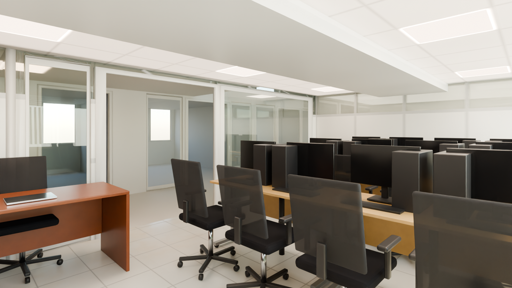
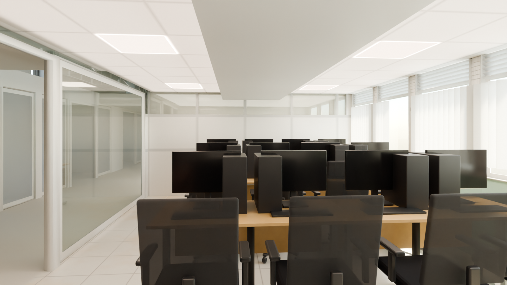
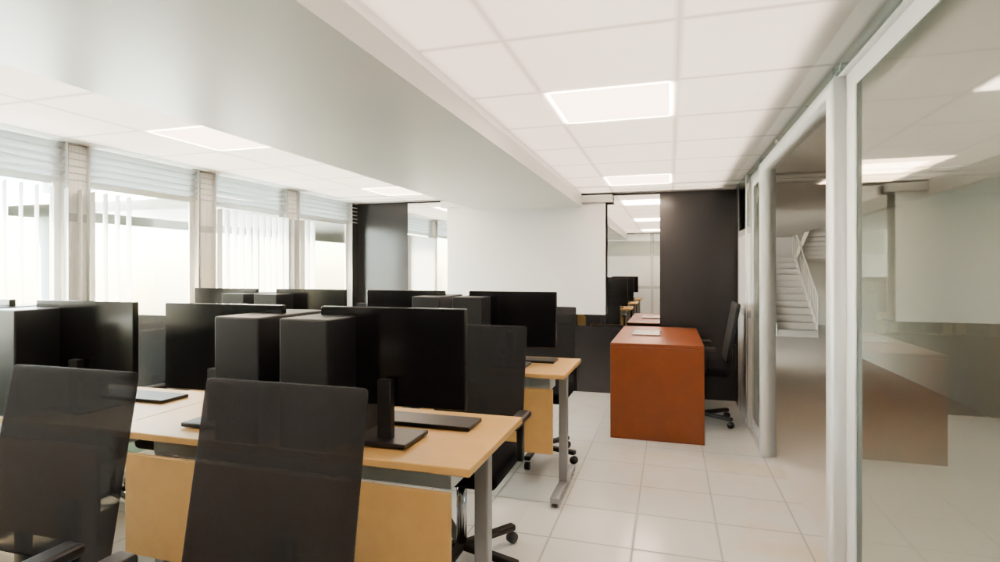
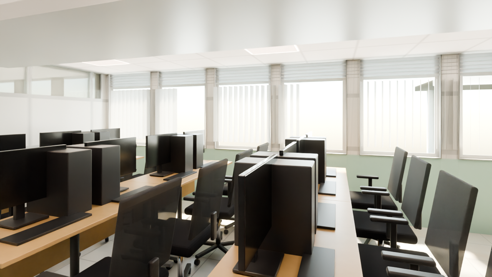

Smart Ideas — National ICT Innovation Hub
Ground floor, top row between KaCyber and the Reception. A computer training lab: three rows of light-oak training desks on grey steel frames with Dell towers and monitors, black mesh task chairs facing west to the white KaCyber partition, an instructor's mahogany desk by the glazed corridor screen, windows with louvres and vertical blinds to the north, and a black east wall with a large mirror and a projector screen. Furniture at real scale; what does not fit is listed below.
Zone: X -11.97..-5.27, Y +3.33..+7.84 (clear 6.55 x 4.32 m between the faces), soffit 2.14 m. Each angle: the reference photo, the shell (model with materials and light only) and the furnished scene. The original meshes are untouched; no render contains people.
2 draft2 final
Zone check and photo mapping
high confidence - matches the plan within 0.3 mRay casts on the GLB: west face X -11.90 (the partition to KaCyber, whose east face is X -11.98), east face X -5.35 (solid wall toward the Reception), north window wall Y +7.74 (dado to 0.87 m, glass 0.97 m to above the soffit), south glazed corridor screen Y +3.38..+3.42 with an open doorway X -8.85..-7.00 (head 2.07 m, no leaf), soffit 2.14 m, flat floor. The plan box (about X -11.9..-5.4, Y +3.4..+7.9) agrees within 0.1 m on every side. Photos agree: windows to the north (right when looking west), corridor screen and glass door to the south, white KaCyber partition with clerestory glass to the west, black wall to the east. The large 'opening' in the black wall is treated as a mirror: it reflects the room, and the model wall there is solid.

| Photo | Where it looks | Angle |
|---|---|---|
| 63 / 64 | South: corridor screen and glass door, instructor desk, black wall on the left, tripod screen | 01 |
| 65 / 66 | West: monitor backs, the white KaCyber partition with clerestory, windows right | 02 |
| 68 / 69 / 70 / 71 / 74 | North-east and east: windows with louvres, blinds and split ACs, black wall with mirror and projector screen | 03 |
| 61 (Founder Space folder) | Also this room (white training desks, Dell PCs) - not used, filed with Founder Space | not used |
| - | From the corridor doorway, looking north | 04 (no photo) |
Toward the glazed corridor screen
photo Hub Space-63.jpg, Hub Space-64.jpgLooking south-west from the window side: the black wall on the left, the instructor's desk and the glass door in the corridor screen, the training desks on the right.
 Photo Hub Space-63.jpg
Photo Hub Space-63.jpg
FurnishedDown the room to the KaCyber partition
photo Hub Space-65.jpg, Hub Space-66.jpgLooking west over the backs of the monitors to the white partition with its clerestory glass; windows on the right, the corridor screen on the left.
 Photo Hub Space-65.jpg
Photo Hub Space-65.jpg
FurnishedThe windows and the black wall
photo Hub Space-68.jpg, Hub Space-69.jpg, Hub Space-70.jpg, Hub Space-71.jpg, Hub Space-74.jpgLooking north-east from the corridor corner: the window wall with louvres and vertical blinds, the desk rows, and the black east wall with the mirror and the projector screen.
 Photo Hub Space-68.jpg
Photo Hub Space-68.jpg
FurnisheddraftFrom the doorway (no matching photo)
photo no matching photoStanding in the corridor doorway, looking north across the desk rows to the windows.

FurnisheddraftWhat differs from the photos (ranked)
- Not reviewed yet.
Dropped at real scale
| Item | Why |
|---|---|
| A fourth row of training desks (photos 65/74 show more seats) | three rows of 1.4 x 0.6 m desks with chairs behind them fill the 6.45 m room at real scale and keep the doorway aisle |
| Split AC units above the windows (photos 68/69) | the window glass runs above the 2.14 m soffit in the model, there is no wall to mount them on |
| Tripod projector screen (photo 63, 1.5 m wide) | the 1.6 m strip in front of the black wall is needed for the walk and the cameras; the pull-down screen on the mirror wall is kept |
| Wooden side chairs with yellow seats (photo 70) | no free floor left beside the desk rows |
| Bags, bottles, cables and laptops | personal items; they would only add noise |
Free camera
Files and last updated
| File | Kind | Size | Modified |
|---|---|---|---|
| 01_toward_corridor_furnished.png | final | 1.4 MB | 2026-10-04 23:05 |
| 02_west_partition_furnished.png | final | 1.3 MB | 2026-10-04 23:15 |
| 03_windows_black_wall_furnished.png | DRAFT | 936.2 KB | 2026-10-03 09:39 |
| 04_from_doorway_furnished.png | DRAFT | 929.9 KB | 2026-10-03 09:11 |
| tour/index.html | free-camera page | 16.2 KB | 2026-10-03 09:12 |
| walkbaked/index.html | free-camera page | 56.3 KB | 2026-10-04 23:18 |
Render settings
- Room
- Smart Ideas - X -11.97..-5.27, Y +3.33..+7.84, soffit 2.14 m
- Renderer
- Blender 4.2 LTS, Cycles, CPU only (i5-10505)
- Draft settings
- 1280 x 720, 32 samples, OIDN (finals 1600 x 900, 192 samples)
- Daylight
- North glazing: soft panel 4 m outside, white balanced, plus sky; louvre band and vertical blinds
- Ceiling lights
- 6 LED panels 600 x 600, 5000 K, plus a soft ceiling fill
- Tone mapping
- AgX, Medium High Contrast, exposure -0.22 (same as the other rooms)
- Furniture
- Real scale, nothing shrunk
- People
- None, by design